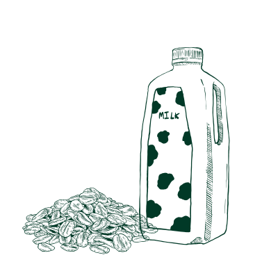
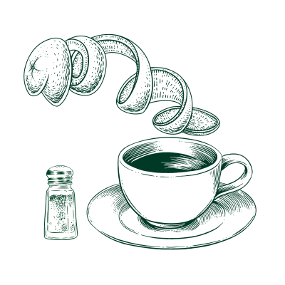

Insomnia
Explore those cultural home remedies to see how Insomnia can be treated differently.

×

Mexico: Chamomile and Linden Tea
Chamomile and linden tea are herbal treatments in Mexican culture and manage sleep problems because both herbs can help reduce stress and have a calming effect on our bodies. The linden helps quiet the mind while the chamomile relaxes our bodies.
Ingredients:
- Chamomile
- Passionflower
- Valerian root
- Lemon balm
- Linden
- Lavender
Steps:
- Prepare the chamomile and linden, and put them in a cup.
- Pour hot water on it and steep for 5 minutes.
×
Cross-cultural: Warm Oat Milk
Warm Oat milk is a nurturing home remedy that was invented in Sweden and has become popular in modern vegan cultures. The combination of oat and warm milk helps wind down the body, and the tryptophan it contains acts as a sleep hormone. Moreover, it helps regulate our blood sugar level as the beta-glucan maintains stable energy in our bodies.
Ingredients:
- Oat Milk(can be purchased at a grocery)
Steps:
- Prepare a cup of oat milk and heat it for 15-20 seconds.
- Slowly sip your warm oat milk and have a good dream!

×
Ghana: Orange Peel Tea
Orange peel tea is a plant-based remedy in Ghana. The orange peel is a medicine in Ghanaian culture and is used to relieve emotional imbalance.
Ingredients:
- Orange peel
- Pure honey
- Cayyene/Chili pepper powder
- Water
Steps:
- Peel the orange into a bowl of water.
- Boil the water with the peel for 15 minutes.
- Get rid of the orange peel and keep the orange peel tea.
- Add a half spoonful of chili to the tea.
- Add some honey for sweetening(Optional).
